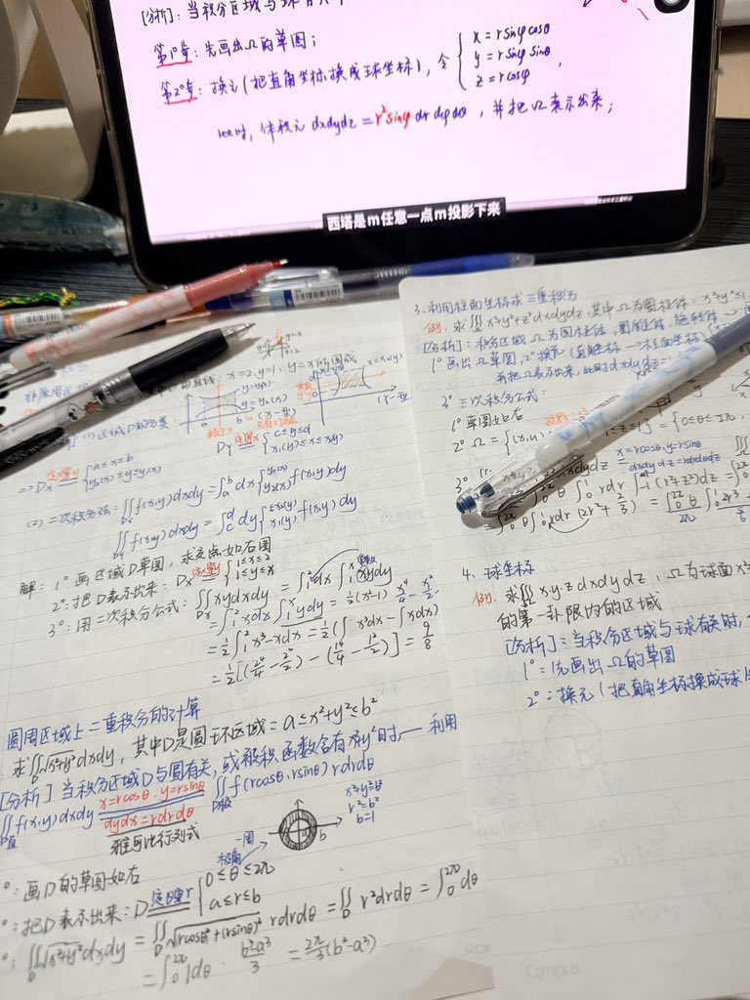

v10L3T
@_Axer1a
@Nanwhju 只是期末周复习的大学生罢了,,,

分享4-ho-met不好体验//jiel全网倡议禁止阿片类
@Nanwhju
在推特上看到这样一条信息：原文（）如下图片也是他的配图
如果他分数够600以上的话，真想吧他招过来跟我学有机化学，孺子可教。
（高考完十几天了，不想出去旅游也不想玩手机，对高数很感兴趣，现在开始凭借高中学历自学高数了） https://t.co/fvhx09m49L